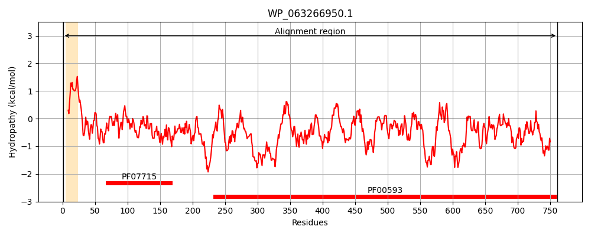
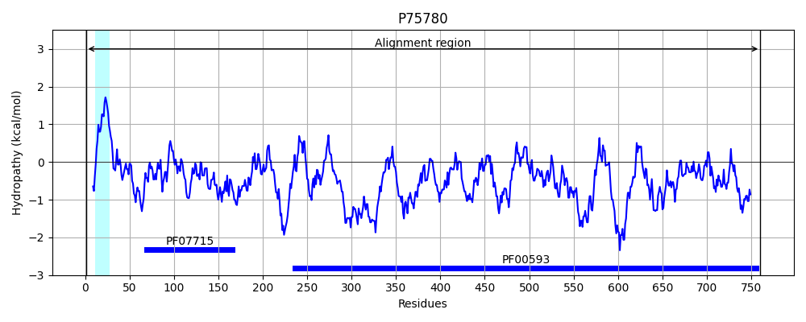
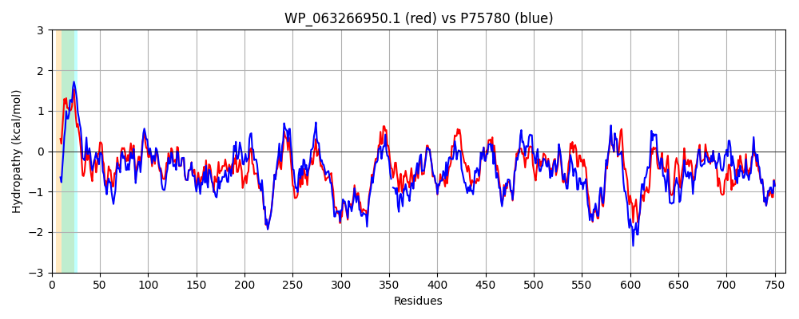

Hit Accession: P75780
Hit TCID: 1.B.14.1.9
Hit Description: gnl|BL_ORD_ID|11406 gnl|TC-DB|P75780|1.B.14.1.9 Catecholate siderophore receptor fiu - Escherichia coli (strain K12).
Mach Len: 761
e:0.000000
Query TMS Count : 1
Hit TMS Count: 1
TMS-Overlap Score: 0.700000
Predicted Substrates:CHEBI:36084;dihydroxybenzoate
BLAST Alignment:
Score: 3205 , Bit scores: 1239 bits, E-value: 0.0e+00, Alignment length: 761, Percentage identity: 77
Query: 1 MEKNASLPFGSFNSLALFTGLCLGASPATGIAAEKSVKNSEETLVVEATPPSLYSPGASADPKFNKPLVDTTRTITVIPEQVIKDQGVTNLTDALKNVPGVGAFYAGENGSSTTGDAIYMRGVDTSNSIYVDGIRDIGSVTRDTFNTQQVEVIKGPAGTDYGRSAPSGSINMISKQPRLDSGIDGSASIGSAWSRRGTLDLNQAFSDNAAFRLNLMGEKTHDAGRDRIENERYGIAPSLAFGLDTPTRLYLNYLHVRQNNTPDGGIPTVGLPGYSAPSPKYAALNSAGKVDTNNFYGTDSDYDKSTTDSGTLRFEHDLTDNTTVRNTTRWSRVKQEYLLTAVMGGASNITAPDINDVNTWSWSRLVNTKDVSNRILTNQTNITSTFNTGSIGHDVSAGVEFTRENQTNYGVNAMTAPAVNLYHPVSNLSIGGLDRNGANANGQTDTFGIYAFDTLTLTERIEVNGGLRLDNYHTKYDSATACGGSGRGAIACPPGQSTGSPVTTVDTAKSGNLVNWKAGALYRLTEQGNVYVNYAISQQPPGGSSFALAASGSGNSANRTDFKPQKAKSSELGTKWQIFDNRLLLSAALFRTDIENEVAANDDGTWSQYGKKRVEGYELSATGNLTPDWTIIAGYTQQHATVTEGQNVAQDGSSALAYTPKHAFTLWTQYQATSDLSVGGGVRYVGSLRRGSDGAVGTPDHTEGYWVADAKLGYRVNSNLDLQLNMYNLFDTDYVASINKSGYRYHPGEPRTFMLTANVHF 761
ME N + P F+SL F GLC+G +P A + N+++TLVVEA+ PSLY+P SADPKF++P+ DTTRT+TVI EQVIKDQG TNLTDALKNVPGVGAF+AGENG+STTGDAIYMRG DTSNSIY+DGIRDIGSV+RDTFNT+QVEVIKGP+GTDYGRSAP+GSINMISKQPR DSGID SASIGSAW RRGTLD+NQ D A RLN+MGEKTHDAGRD+++NERYG+APS+AFGL T RLYLNYLHV Q+NTPDGGIPT+GLPGYSAPS AALN +GKVDT+NFYGTDSDYD STTD+ T+RFEHD+ DNTT+RNTTRWSRVKQ+YL+TA+MGGASNIT P +DVN+W+WSR NTKDVSN+ILTNQTN+TSTF TGSIGHDVS GVEFTRE QTNYGVN +T PAVN+YHP S++ GGL RNGANANGQTDTF IYAFDTL +T E+NGG+RLDNYHT+YDSATACGGSGRGAI CP G + GSPVTTVDTAKSGNL+NWKAGALY LTE GNVY+NYA+SQQPPGG++FALA SGSGNSANRTDFKPQKA +SE+GTKWQ+ D RLLL+AALFRTDIENEV NDDGT+SQYGKKRVEGYE+S GN+TP W +I GYTQQ AT+ G++VAQDGSS+L YTP+HAFTLW+QYQAT D+SVG G RY+GS+ +GSDGAVGTP TEGYWVADAKLGYRVN NLD QLN+YNLFDTDYVASINKSGYRYHPGEPRTF+LTAN+HF
Sbjct: 1 MENNRNFPARQFHSLTFFAGLCIGITPVAQALAAEGQTNADDTLVVEASTPSLYAPQQSADPKFSRPVADTTRTMTVISEQVIKDQGATNLTDALKNVPGVGAFFAGENGNSTTGDAIYMRGADTSNSIYIDGIRDIGSVSRDTFNTEQVEVIKGPSGTDYGRSAPTGSINMISKQPRNDSGIDASASIGSAWFRRGTLDVNQVIGDTTAVRLNVMGEKTHDAGRDKVKNERYGVAPSVAFGLGTANRLYLNYLHVTQHNTPDGGIPTIGLPGYSAPSAGTAALNHSGKVDTHNFYGTDSDYDDSTTDTATMRFEHDINDNTTIRNTTRWSRVKQDYLMTAIMGGASNITQPT-SDVNSWTWSRTANTKDVSNKILTNQTNLTSTFYTGSIGHDVSTGVEFTRETQTNYGVNPVTLPAVNIYHPDSSIHPGGLTRNGANANGQTDTFAIYAFDTLQITRDFELNGGIRLDNYHTEYDSATACGGSGRGAITCPTGVAKGSPVTTVDTAKSGNLMNWKAGALYHLTENGNVYINYAVSQQPPGGNNFALAQSGSGNSANRTDFKPQKANTSEIGTKWQVLDKRLLLTAALFRTDIENEVEQNDDGTYSQYGKKRVEGYEISVAGNITPAWQVIGGYTQQKATIKNGKDVAQDGSSSLPYTPEHAFTLWSQYQATDDISVGAGARYIGSMHKGSDGAVGTPAFTEGYWVADAKLGYRVNRNLDFQLNVYNLFDTDYVASINKSGYRYHPGEPRTFLLTANMHF 760 | Protein Hydropathy Plots: |
|---|
|  |  |
Pairwise Alignment-Hydropathy Plot:
|
|---|
|  |